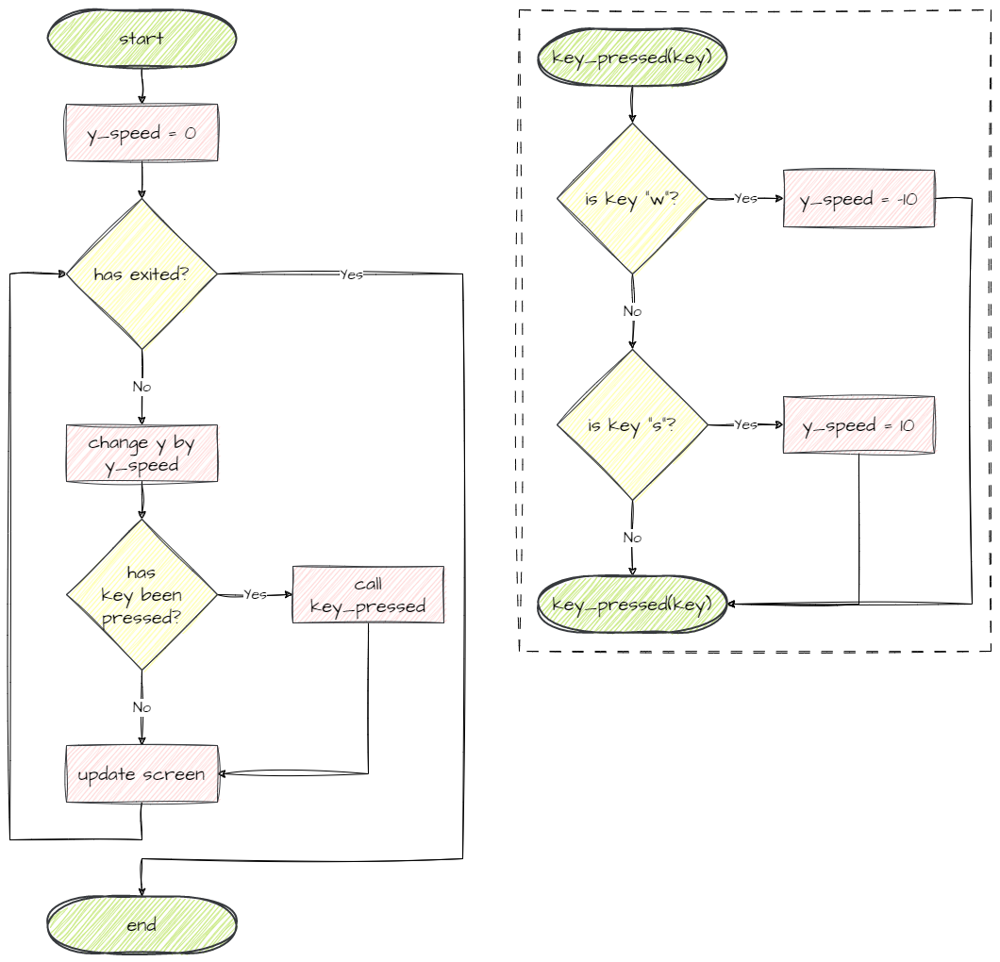
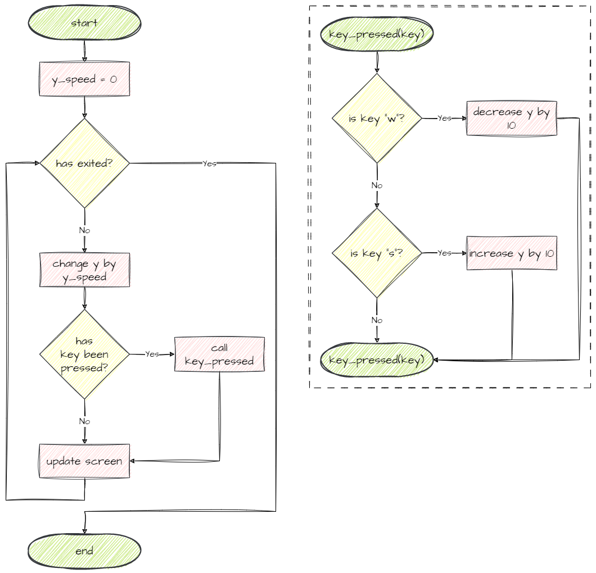
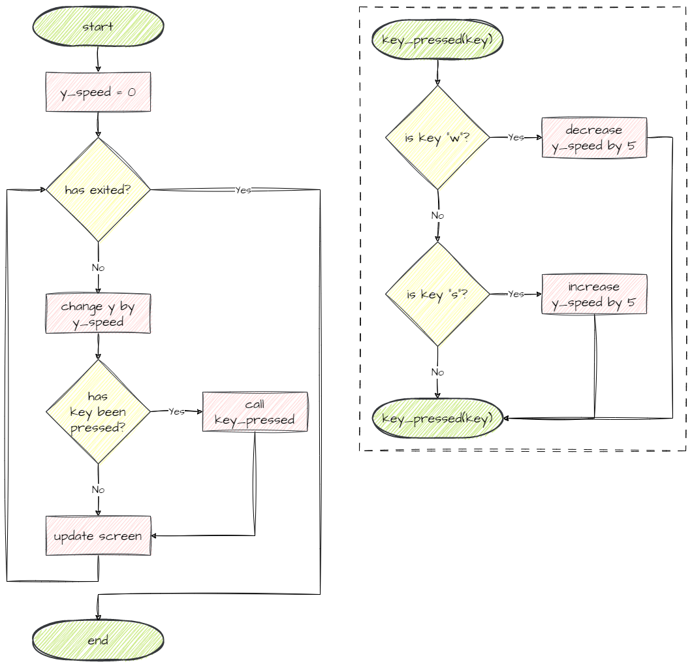

Advanced Spaceship Movement#
Different Movement Options#
Last lesson we made the player’s spaceship move when a key press is detected. When we pressed the w key the spaceship started moving up and when we pressed the s the spaceship started moving down. The spaceship will keep moving in a specific direction until the opposite key is pressed, but there is different ways we can make the movement work:
Always in motion
In motion while key is pressed
Always in motion with acceleration
To understand how to do this we need to understand how GameFrame works with Object’s coordinates.
According to the GameFrame documents there are six attributes that deal with the location of an object in the Room:
xandywhich are the current coordinates of the Objectprev_xandprev_ywhich were hold the coordinates of the Object in the last framex_speedandy_speedwhich indicate the movement in the respectivexandydirection each frame
Frames
In GameFrame, frames refers to every time the computer screen is redrawn. The frequency of this is determined by the Global variable FRAMES_PER_SECOND which is set at 30. This means the computer will redraw the screen every 1/30 seconds (approx 33 nanoseconds). Therefore x_speed and y_speed show the difference in x and y positions every 33 nanoseconds.
Always in motion#
Below is the flowchart for the always in motion approach.
You can see that for each loop:
the
yposition changes by the value ofy_speed.the value of
y_speedstarts at0the value of
y_speedwill change if either thewkey orskey is pressedthere is no way for
y_speedto return to0

This style of movement is implemented in our current code for the key_press method:
22 def key_pressed(self, key):
23 """
24 Respond to keypress up and down
25 """
26
27 if key[pygame.K_w]:
28 self.y_speed = -10
29 elif key[pygame.K_s]:
30 self.y_speed = 10
In motion while key pressed#
Below is the flowchart for the in motion while key pressed approach.
Note that:
the value of
y_speedcannot change from0→ there is no automatic update to theyvaluethe key press directly changes the value of
y→ as long as w is pressedywill decrease by 10

To implement this style of movement, change the key_pressed function to the code below:
22 def key_pressed(self, key):
23 """
24 Respond to keypress up and down
25 """
26
27 if key[pygame.K_w]:
28 self.y -= 10
29 elif key[pygame.K_s]:
30 self.y += 10
Always in motion with acceleration#
Below is the flowchart for the always in motion with acceleration approach.
Looking at the flowchart, we can see that this is a combination of the last two approaches:
y_speedwill be used to update theyof the objectpressing a key will increase or decrease the
y_speedthis gives the movement a sense if acceleration → the longer you hold a key the faster it will move in the appropriate direction.

To use this style of movement, change the key_pressed function to the following.
22 def key_pressed(self, key):
23 """
24 Respond to keypress up and down
25 """
26
27 if key[pygame.K_w]:
28 self.y_speed -= 5
29 elif key[pygame.K_s]:
30 self.y_speed += 5
Choose your movement#
Give all three movement options a try, and choose the one that you want to use. Just remember that if you choose either the in motion while key is pressed or the always in motion with acceleration option, your code will be slightly different.